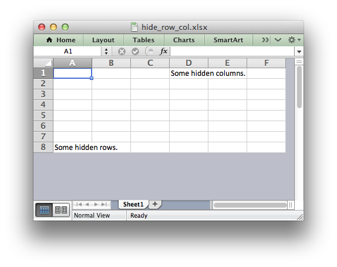

libxlsxwriter
Main Page
Contents
Files
Examples
All
Data Structures
Files
Functions
Variables
Typedefs
Enumerations
Enumerator
Macros
Pages
hide_row_col.c
<< worksheet_protection.c
panes.c >>
Example of hiding rows and columns in an Excel worksheet.

/*
* An example of how to hide rows and columns using the libxlsxwriter
* library.
*
* In order to hide rows without setting each one, (of approximately 1 million
* rows), Excel uses an optimization to hide all rows that don't have data. In
* Libxlsxwriter we replicate that using the worksheet_set_default_row()
* function.
*
* Copyright 2014-2018, John McNamara, jmcnamara@cpan.org
*
*/
#include "xlsxwriter.h"
int
main() {
/* Create a new workbook and add a worksheet. */
lxw_workbook
*workbook =
workbook_new
(
"hide_row_col.xlsx"
);
lxw_worksheet
*worksheet =
workbook_add_worksheet
(workbook, NULL);
lxw_row_t
row;
/* Write some data. */
worksheet_write_string
(worksheet, 0, 3,
"Some hidden columns."
, NULL);
worksheet_write_string
(worksheet, 7, 0,
"Some hidden rows."
, NULL);
/* Hide all rows without data. */
worksheet_set_default_row
(worksheet, 15,
LXW_TRUE
);
/* Set the height of empty rows that we want to display even if it is */
/* the default height. */
for
(row = 1; row <= 6; row++)
worksheet_set_row
(worksheet, row, 15, NULL);
/* Columns can be hidden explicitly. This doesn't increase the file size. */
lxw_row_col_options
options = {.
hidden
= 1};
worksheet_set_column_opt
(worksheet,
COLS
(
"G:XFD"
), 8.43, NULL, &options);
workbook_close
(workbook);
return
0;
}
Copyright 2014-2019 John McNamara. Generated by